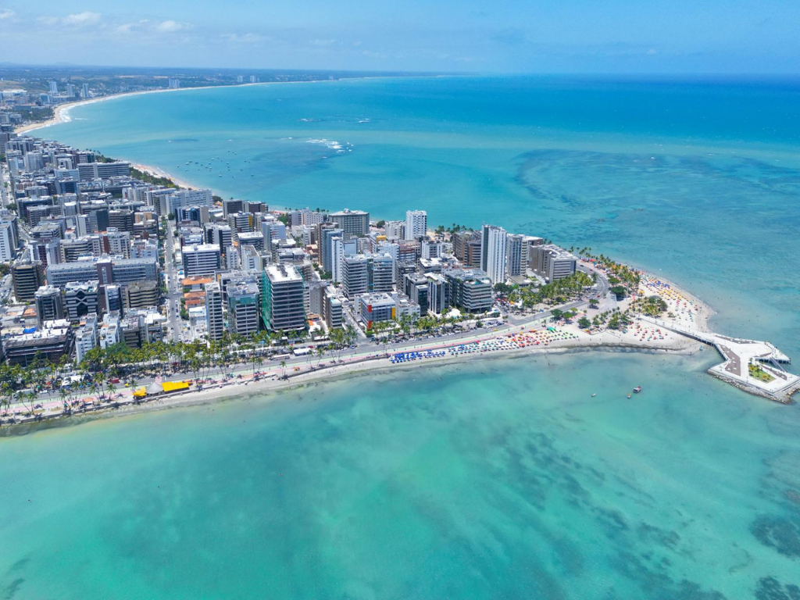

O estado destaca-se mundialmente por seu litoral paradisíaco, carinhosamente apelidado de "Caribe Brasileiro" devido às águas mornas, transparentes e de tom verde-esmeralda de Maragogi, Japaratinga e da Praia do Antunes. Além do forte apelo das piscinas naturais e barreiras de corais, Alagoas guarda uma profunda herança histórica e cultural expressa na produção do tradicional artesanato de renda filé e na memória de resistência do Quilombo dos Palmares, localizado na região da União dos Palmares.

Voltar